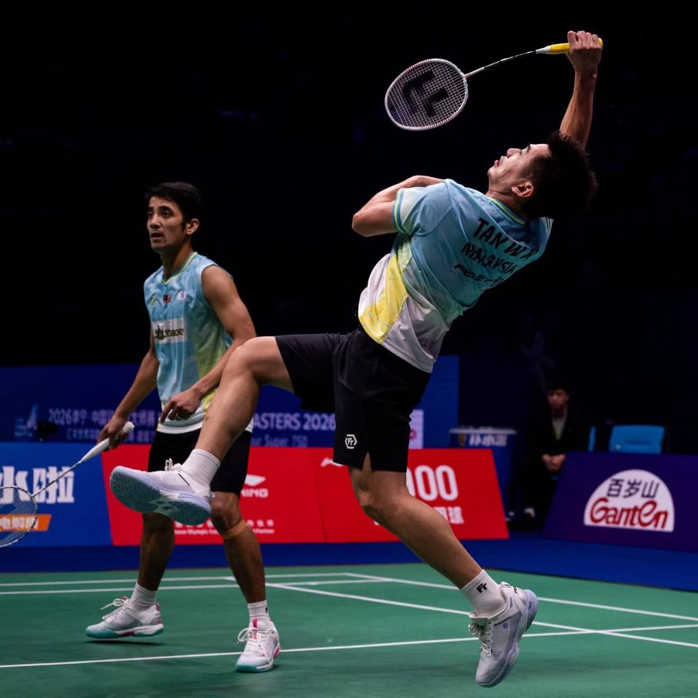
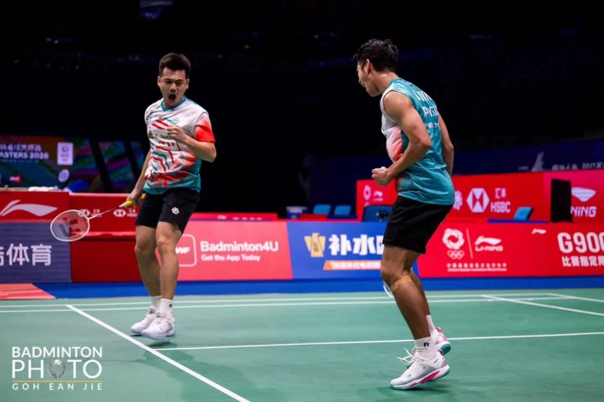
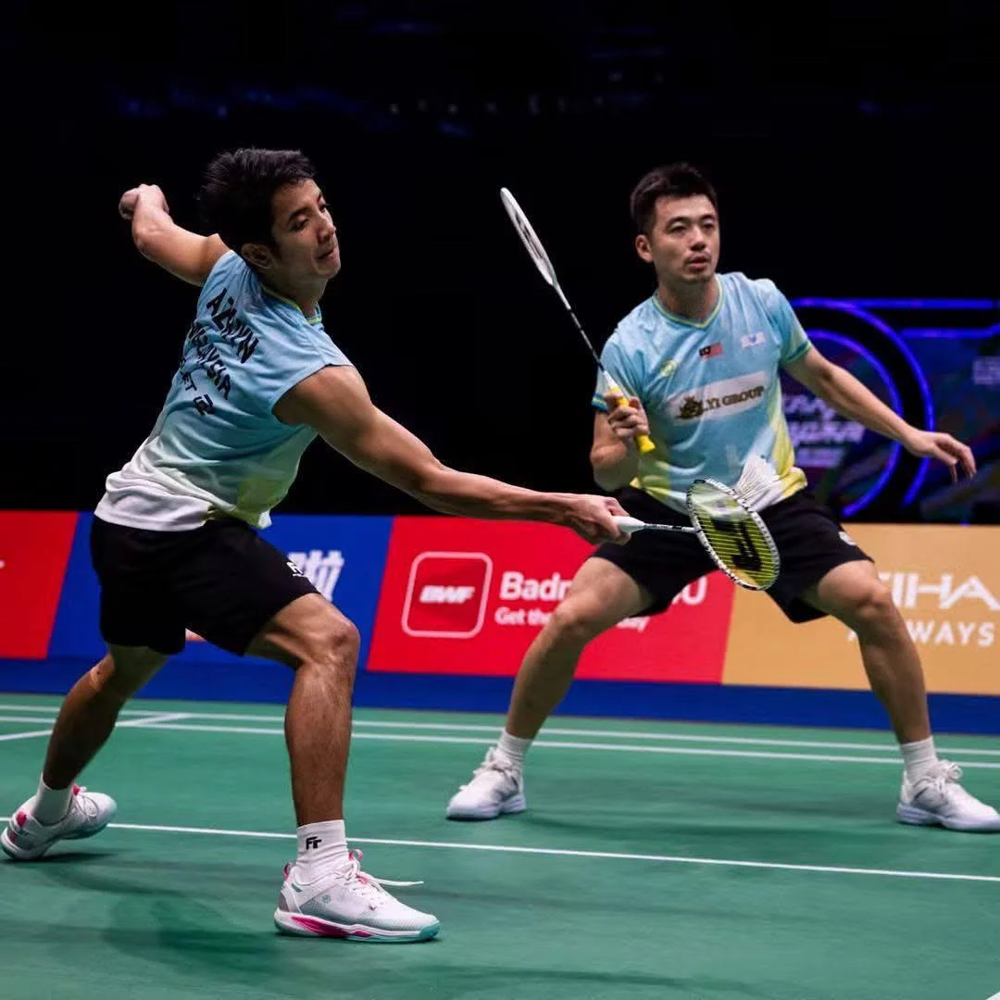
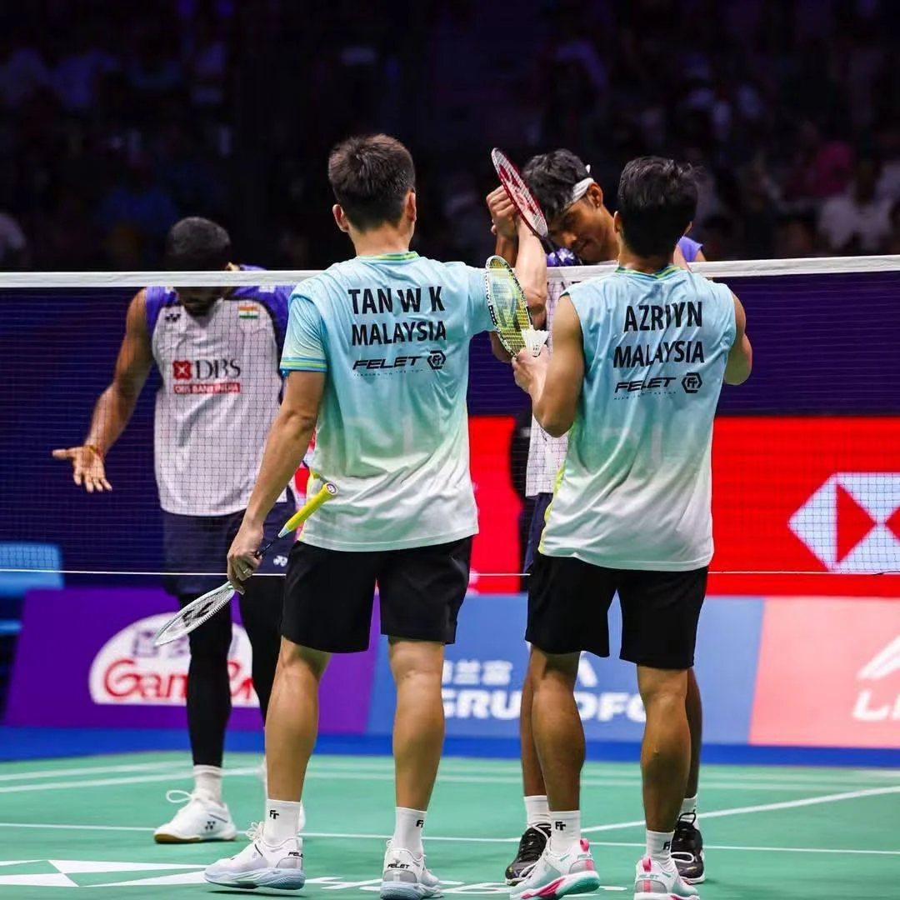

Player visits
Connect on court through player visits and shared badminton experiences.





From your first rally to your next competition. Find your game at TWK Badminton Academy.
For beginners from Primary 1 onwards. Build sound fundamentals and confidence on court.
Enquire ↗02A welcoming programme for adults learning or returning to badminton.
Enquire ↗03Structured technical and physical development for players ready to progress further.
Enquire ↗04Focused coaching shaped around the player’s level, needs and goals.
Enquire ↗
Founder · Rio 2016 Olympic silver medallist
Meet the founder and the coaching team behind TWK.
Meet our team ↗
Connect on court through player visits and shared badminton experiences.
Exchange playing experience and perspectives on badminton technique.
Explore opportunities for collaboration between academies.
Tell us a little about yourself. We’ll help you find a suitable training option.